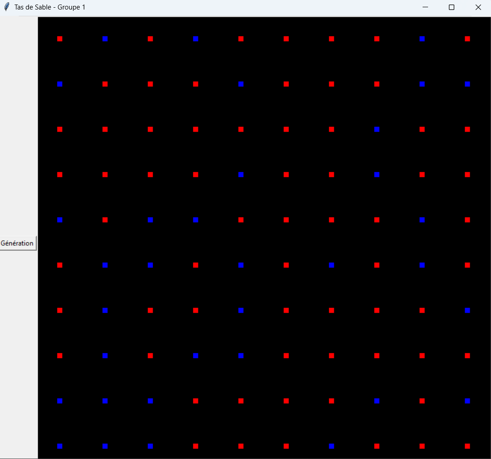

Je suis OLAYODE Ilerioluwa, développeur(se) informatique passionné(e) par la création de solutions web et d'applications.
L’objectif de ce projet est de simuler l’écoulement d’un tas de sable et d’implémenter des opérations qui lui sont lié. La modélisation que l’on utilise repose sur un automate cellulaire appelé, en anglais, abelian sandpile model.

Lancer le script.
– Un clic sur une des cases du taquin juxtaposée à la case vide permet de déplacer celle-ci comme on veut sur le canvas, puis un autre clic est nécessaire pour cette fois-ci déposer la case en question. (Cette fonctionnalité est gadget et peu efficace car il existe quelques bugs dessus.)
– Les flèches directionnelles permettent d’interagir avec le Taquin et de bouger les cases à l’intérieur de la double dimension.
– Si une case est bien placée alors elle devient verte.
– Les boutons situés sur la tranche basse du GUI sont tous fonctionnels et correspondent à leur dénomination.
– Si toutes les cases sont bien placées, alors dans le terminal vous pourrez lire "win".
Un puzzle glissant développé avec HTML5 Canvas. Utilise les flèches ou clique pour déplacer les tuiles.
Voir le projetDéveloppement d'un compresseur d'image en Python reproduisant le format BC1 utilisé dans les cartes graphiques. Le projet inclut la découpe en blocs 4x4, la génération de palettes de couleurs optimisées, l'encodage en binaire, et la décompression. Qualité évaluée via l'indicateur PSNR.
Voir le projetVous pouvez me contacter par email à ileri.olayode@outlook.fr.